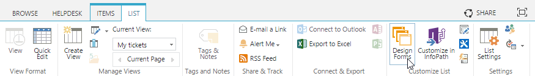
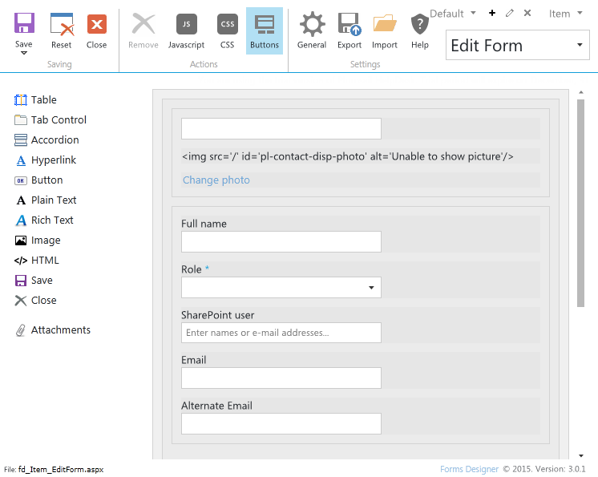
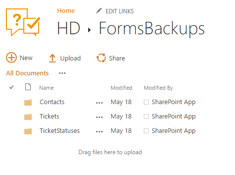
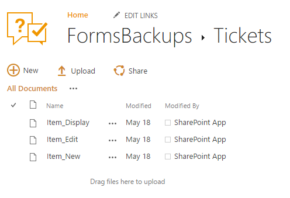

Customize forms¶
You can use embedded Forms Designer to customize ticket and contact forms. Forms Designer allows to design SharePoint forms with tabs, complex tables and accordions among other UI elements.
You can find more information on how to use Forms Designer in the documentation.
In order to customize a form with Forms Designer navigate to the list the form is based on and select List or Library tab in the ribbon. There you will find a new button called “Design Form” under the “Customize List” section:

Clicking the button will load Forms Designer where you can edit your form in a simple drag-and-drop fashion:

Restore default forms¶
You can easilly rollback any changes applied to the form and return to the default form.
Default form layouts you can find in <your HelpDesk site>/HD/FormsBackups/ forlder.

All layouts are splitted by three folders:
- Tickets
- Contains backups of the tickets forms.
- Contacts
- Contains backups of the contacts forms.
- TicketStatuses
- Contains backups of the ticket statuses forms.

For example to restore ticket edit form you need to do following steps:
- Download file from
<your HelpDesk site>/HD/FormsBackups/Tickets/Item_edit.xfds. - Navigate to any tickets list view (for example click on “Home” button on navbar).
- Click on “Design Forms” button in the ribbon.
- Select “Edit Form” in Forms Designer.
- Click on “Import” button.
- Select downloaded file “Item_edit.xfds”.
- Save the form.